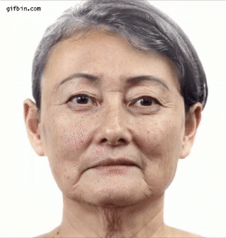

Are you old and your body just isn't what is used to be? Paralyzed? Brain damage? Missing a limb or two? Can't hear? Have a terminal illness like Lou Gehrig's disease or cancer? Don't worry! Eternal Youth is the solution to all your problems.
Eternal Youth is our new service that allows you to have eternal youth forever! It can even solve any physical disabilities you have that modern medicine can't fix! We take a sample of your DNA before using Sweet Release to separate you from your physical body. If you have physical disabilities or genetic illnesses, our trained geneticists will modify your DNA to get rid of these. We will use the modified DNA to create a clone of your body at your peak physical age which we will then transfer your soul back into.
To use our Eternal Youth service, you must visit one of our site locations and sign up for our service. If you can't visit for reasons like being confined to the hospital, use our website and one of our staff will guide your soul to one of our sites.
Visit the Eternal Youth section of our Instructions and Warnings for information of how to use Eternal Youth.